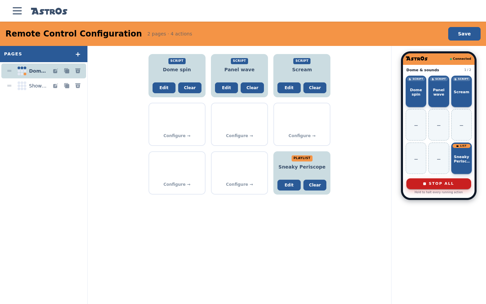
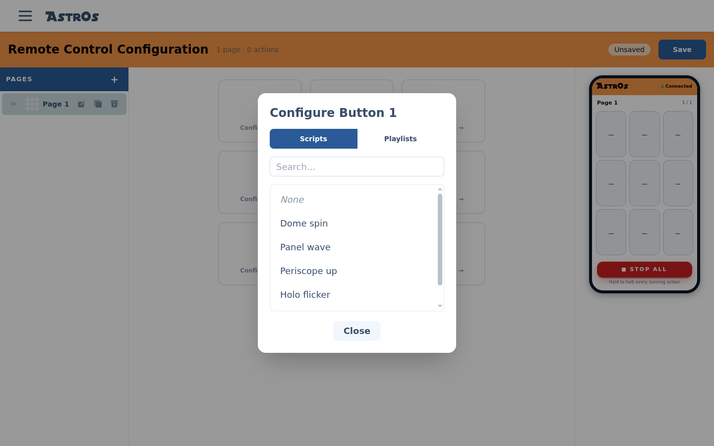
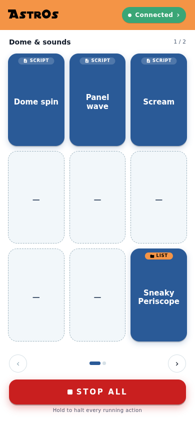

Build your remote.
The Remote Control Configuration screen turns your scripts and playlists into pages of big, mashable buttons — then any phone on your droid's network becomes the remote.
§The layout
The editor has three panes: your Pages on the left, the selected page's 3 × 3 button grid in the middle, and a live phone preview on the right. The header keeps a running count of pages and assigned actions, and holds the Save button.

§Pages
Each page is one screen of nine buttons on the remote. Select + to add a page, and use a page's row actions to rename, duplicate or delete it; drag the handle to reorder. Group buttons the way you perform — a page for dome gags, a page for parade routines — and name pages so you can tell them apart mid-show.
§Assign buttons
Select Configure → on an empty slot to open the button editor. Pick from the Scripts or Playlists tab (search if the list is long), or choose None to leave the slot empty. An assigned card shows what it holds — Edit swaps it for something else, Clear empties the slot.

As you work, the phone preview on the right mirrors the selected page exactly — it's display-only, so clicking it won't fire anything at the droid.
§Save it
An Unsaved badge appears next to Save whenever you have
pending changes. Saving stores the layout on the server — there's nothing to push to the droid's
nodes, so unlike Modules there is no separate
Sync step. The same saved layout also feeds an
AstrOs.Screen touchscreen remote, which picks it up when it syncs with the
server.
§Use it from your phone
On a phone, browse to your server's address and log in — mobile browsers are sent straight to a full-screen remote (and kept there; use a desktop browser for everything else). Tap a button and the script or playlist fires immediately; swipe or use the arrows to move between pages. Tapping the Connected chip flips to a droid status panel — tap again to get back to the buttons.

Use your phone browser's Add to Home Screen so the remote opens full-screen with one tap, like an app.
§Stop All — the big red button
At the bottom of the remote, Stop All halts every running script and playlist — press and hold it to trigger (a quick tap won't, so a pocket-bump can't stop the show). While stopped, the remote stays locked out and the button becomes Clear Panic; hold that to re-enable control.
Stop All halts AstrOs animations — it doesn't cut power to motors or electronics. For anything safety-critical, keep a hardware kill switch between your batteries and your drive system.